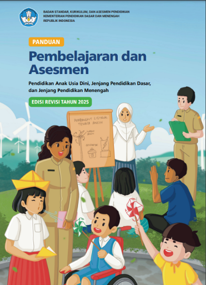
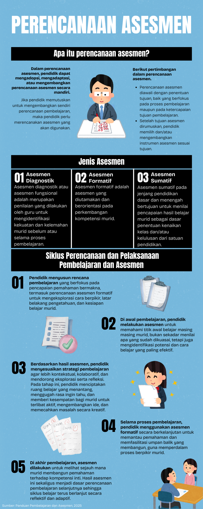
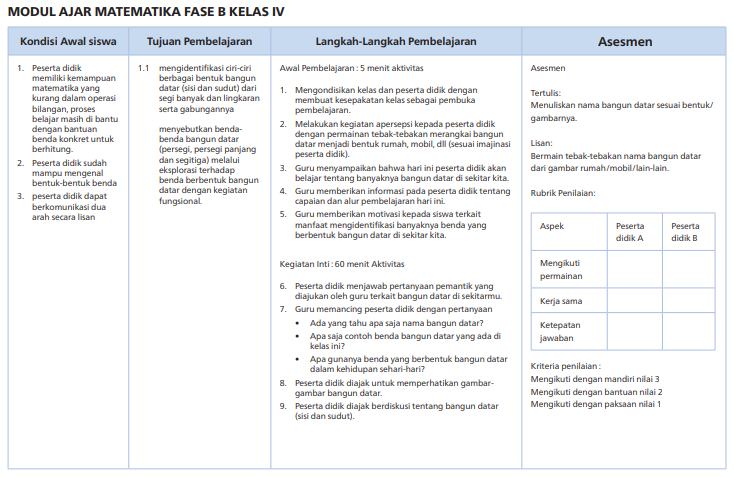
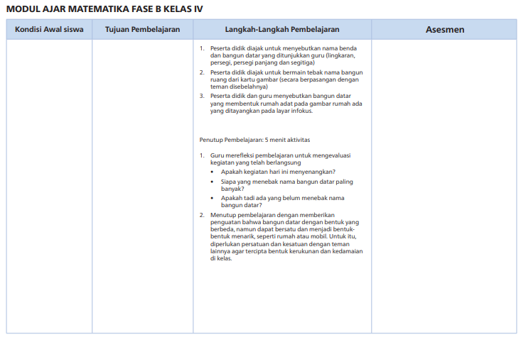

1. Konsep Asesmen sesuai Panduan Pembelajaran dan Asesmen (PPA) Tahun 2025

Gambar 1. Panduan Pembelajaran dan Asesmen (PPA) Tahun 2025
Sebelum menuju ke materi, Bapak/Ibu dapat mengunduh PPA Tahun 2025 melalui tautan berikut: Tautan PPA 2025. Selanjutnya Bapak/Ibu dapat membaca sekilas tentang konsep asesmen dalam PPA tersebut.
Bapak/Ibu, sebagaimana tertuang dalam buku yang telah dipelajari, konsep asesmen yang dijelaskan pada PPA Tahun 2025 berakar pada perubahan paradigma pendidikan. Paradigma ini berpusat pada murid dan berfokus pada pengembangan kompetensi secara holistik. Asesmen tidak hanya berfungsi sebagai alat untuk mengukur hasil belajar, tetapi juga menjadi proses refleksi, perbaikan, dan tindak lanjut pembelajaran yang mendukung perkembangan kompetensi murid secara berkelanjutan.
Perencanaan dan pelaksanaan asesmen perlu mengacu pada tiga prinsip utama dalam pembelajaran, yaitu:
- Berkeadilan
Asesmen hasil belajar murid dilakukan sesuai dengan tujuan asesmen secara adil. Guru melaksanakan asesmen tanpa bias terhadap latar belakang, identitas, atau kebutuhan khusus murid. - Objektif
Asesmen hasil belajar murid dilakukan berdasarkan informasi faktual tentang pencapaian perkembangan atau hasil belajar. Guru melaksanakan asesmen secara konsisten dengan kriteria ketercapaian yang jelas dan disepakati bersama. Penilaian tidak didasarkan pada persepsi pribadi atau faktor subjektif lainnya. Fokus asesmen diarahkan pada kompetensi yang ingin dicapai, dengan prosedur dan instrumen yang sahih serta reliabel. - Edukatif
Asesmen hasil belajar murid dilakukan dengan tujuan memberikan umpan balik yang membangun. Hasil asesmen dimanfaatkan oleh pendidik, murid, dan orang tua untuk meningkatkan proses pembelajaran dan hasil belajar. Asesmen mendorong perbaikan dan memotivasi murid untuk terus belajar. Penilaian tidak hanya menilai hasil akhir, tetapi juga memperkuat proses belajar.
Pemahaman Bapak/Ibu terkait jenis asesmen dapat diperkuat melalui infografis yang tersedia. Infografis tersebut dapat diunduh melalui Tautan Infografis.
Tiga konsep asesmen utama sesuai PPA Tahun 2025 adalah asesmen diagnostik, formatif, dan sumatif. Ketiganya memiliki peran yang berbeda namun saling melengkapi untuk mendukung proses pembelajaran yang berpusat pada murid dan berorientasi pada pencapaian tujuan.

Gambar 2. Infografis Perencanaan Asesmen
a. Asesmen Diagnostik
Asesmen diagnostik, atau asesmen fungsional menurut PPA Tahun 2025, merupakan penilaian yang dilakukan oleh guru untuk mengidentifikasi kekuatan dan kelemahan murid sebelum atau selama proses pembelajaran. Tujuan asesmen ini untuk mendiagnosis kemampuan dasar, pemahaman awal, serta kondisi psikologis dan sosial-emosional murid. Informasi yang diperoleh akan membantu guru menyesuaikan metode pengajaran agar sesuai dengan kebutuhan individual setiap murid.
Pelaksanaan asesmen diagnostik dilakukan pada tahap awal sebelum pembelajaran dimulai. Hasil asesmen diagnostik menjadi dasar pengambilan keputusan bagi guru dalam merancang dan menyesuaikan pembelajaran. Perencanaan pembelajaran akan memuat profil awal murid berdasarkan hasil asesmen ini.
Jenis asesmen diagnostik meliputi:
- Diagnostik kognitif,
bertujuan untuk mengidentifikasi kemampuan dasar murid dalam topik mata pelajaran tertentu. - Diagnostik nonkognitif,
bertujuan untuk menggali aspek-aspek seperti kondisi psikologis, sosial-emosional, aktivitas belajar di rumah, gaya belajar, karakter, dan minat murid.
b. Asesmen Formatif
Asesmen formatif menurut PPA Tahun 2025 merupakan asesmen yang diutamakan dan berorientasi pada perkembangan kompetensi murid. Tujuan utama asesmen ini untuk:
- memantau dan memperbaiki proses pembelajaran serta mengevaluasi pencapaian tujuan pembelajaran, serta
- memberikan umpan balik yang berkelanjutan bagi guru dan murid.
Fokus asesmen ini adalah perbaikan proses pembelajaran, bukan sekadar pengukuran hasil akhir. Bentuk asesmen dapat berupa pertanyaan lisan saat pembelajaran berlangsung, observasi di tengah kegiatan belajar, presentasi murid, penilaian portofolio, atau projek.
Pelaksanaan asesmen formatif dapat dilakukan sepanjang proses pembelajaran. Di awal pembelajaran, asesmen digunakan untuk mengetahui kesiapan murid dalam mempelajari materi dan mencapai tujuan yang direncanakan. Di tengah pembelajaran, asesmen menjadi dasar refleksi terhadap proses belajar secara keseluruhan dan dapat dijadikan acuan untuk perencanaan serta revisi pembelajaran. Di akhir pembelajaran, asesmen membantu memantau kemajuan murid dan mengidentifikasi sejauh mana tujuan pembelajaran telah tercapai. Jika tujuan belum tercapai, pendidik perlu memberikan tindak lanjut agar murid dapat mencapai kompetensi yang diharapkan.
Fungsi asesmen formatif adalah membantu guru menyesuaikan metode pengajaran sesuai dengan kebutuhan murid. Bagi murid, asesmen formatif menjadi alat refleksi untuk memahami kelebihan dan kekurangan dalam proses belajar, serta mengetahui hal-hal yang perlu ditingkatkan.
Jenis asesmen formatif meliputi:
- Assessment as learning, menjadikan murid aktif dalam proses belajar dengan cara merefleksi perkembangan kompetensi, seperti melalui penilaian diri atau jurnal refleksi.
- Assessment for learning, digunakan untuk memperbaiki proses pembelajaran dengan memberikan umpan balik konstruktif dari guru, misalnya melalui teknik penilaian kelas atau observasi.
Video penjelasan asesmen formatif dapat disimak pada video berikut ini:
Video Penjelasan Asesmen Formatif. (sumber)
c. Asesmen Sumatif
Asesmen sumatif menurut PPA Tahun 2025 merupakan asesmen yang digunakan untuk menilai pencapaian hasil belajar murid. Hasil asesmen ini menjadi dasar dalam pengambilan keputusan terkait kenaikan kelas dan kelulusan dari satuan pendidikan. Tujuan utama asesmen sumatif adalah memastikan ketercapaian tujuan pembelajaran.
Pelaksanaan asesmen sumatif dilakukan pada akhir suatu periode pembelajaran. Contohnya di akhir bab, akhir semester, atau akhir jenjang pendidikan seperti ujian akhir SD atau SMA. Bentuk asesmen tidak terbatas pada tes tertulis. PPA Tahun 2025 memberikan fleksibilitas kepada pendidik untuk menggunakan berbagai bentuk asesmen, seperti tes lisan, penugasan, proyek, portofolio, atau praktik.
Tujuan dan fungsi asesmen sumatif meliputi:
- Pengukuran ketercapaian tujuan pembelajaran
Asesmen digunakan untuk memastikan apakah murid telah menguasai kompetensi pada suatu topik, akhir semester, atau akhir jenjang pendidikan. - Penentuan nilai akhir
Hasil asesmen digunakan untuk menetapkan nilai akhir yang tercantum dalam rapor. Nilai ini menjadi dasar pengambilan keputusan penting seperti kenaikan kelas dan kelulusan. - Evaluasi program pembelajaran
Hasil asesmen menjadi umpan balik bagi guru dan sekolah untuk mengevaluasi efektivitas program serta metode pembelajaran yang telah diterapkan. Evaluasi ini menjadi dasar perbaikan di masa mendatang.
Jenis asesmen sumatif yang dapat dipilih antara lain:
- Tes tulis, berupa pilihan ganda, isian singkat, uraian, atau esai.
- Proyek, berupa tugas atau laporan penelitian yang dikerjakan oleh murid.
- Portofolio, berupa kumpulan hasil kerja murid yang disusun secara terstruktur selama periode tertentu, seperti laporan, esai, foto, atau video.
- Observasi, dilakukan untuk mengamati perilaku, interaksi, atau kinerja murid selama proses pembelajaran.
- Praktik, digunakan untuk menguji keterampilan murid secara langsung, seperti praktik di laboratorium, olahraga, atau kegiatan lainnya.
Bapak/Ibu, penjelasan tentang asesmen sumatif di atas semoga dapat memperjelas pemahaman. Jika masih ada hal yang membingungkan atau ingin didalami lebih lanjut, silakan berkonsultasi dengan fasilitator.
Pembahasan selanjutnya akan berfokus pada asesmen bagi murid dengan hambatan pendengaran dan hambatan intelektual di SDLB.
2. Penyesuaian Asesmen bagi Murid Hambatan Pendengaran/Intelektual
Bapak/Ibu, topik sebelumnya telah membahas prinsip dasar asesmen secara umum. Bagian ini akan mengajak Bapak/Ibu untuk memahami lebih dalam cara melakukan asesmen bagi murid dengan hambatan pendengaran dan hambatan intelektual. Perbedaan utama asesmen bagi murid dengan hambatan khusus dibandingkan dengan murid tanpa hambatan terletak pada pendekatan, instrumen, dan penyesuaian yang dilakukan. Video berikut dapat membantu memperjelas pemahaman Bapak/Ibu sebelum melanjutkan ke pembahasan.
Video Asesmen Formatif. (sumber)
Bapak/Ibu, asesmen bagi murid dengan hambatan tertentu, atau Anak Berkebutuhan Khusus (ABK), menurut PPA Tahun 2025, harus dilaksanakan secara inklusif, berkeadilan, dan disesuaikan. Panduan ini menekankan pentingnya asesmen yang tidak bias dan mampu mencerminkan kemampuan murid secara akurat. Penyesuaian asesmen dilakukan berdasarkan kebutuhan spesifik masing-masing individu, bukan berdasarkan pada pendekatan yang seragam.
Prinsip dasar asesmen inklusif meliputi:
- Berkeadilan
Asesmen memberikan kesempatan yang sama bagi semua murid untuk menunjukkan kemampuan mereka tanpa terhalang oleh hambatan yang dimiliki. - Fleksibel
Guru memiliki keleluasaan dalam memilih metode, instrumen, dan waktu pelaksanaan asesmen. Bentuk asesmen tidak harus berupa tes tertulis. - Holistik
Asesmen mencakup berbagai aspek, tidak hanya kognitif, tetapi juga keterampilan, sikap, dan perkembangan sosial-emosional murid. - Berpusat pada Murid
Penyesuaian asesmen didasarkan pada kebutuhan individual murid yang telah diidentifikasi melalui asesmen diagnostik pada awal pembelajaran.
Berikut penyesuaian asesmen secara spesifik untuk murid dengan hambatan pendengaran dan hambatan intelektual.
a. Hambatan Pendengaran
Murid dengan hambatan pendengaran menghadapi tantangan utama dalam komunikasi verbal. Penyesuaian asesmen perlu difokuskan pada cara mengatasi hambatan tersebut agar murid tetap dapat memahami instruksi dan menunjukkan kemampuannya secara optimal.
Penyampaian asesmen:
- Bahasa isyarat atau komunikasi visual seperti tulisan, gambar, atau video digunakan untuk menyampaikan instruksi dan pertanyaan.
- Posisi guru saat berbicara harus terlihat jelas oleh murid, baik saat melakukan lip reading maupun saat menggunakan bahasa isyarat.
- Waktu tambahan diberikan agar murid memiliki kesempatan memahami setiap instruksi dengan baik.
Bentuk asesmen:
- Asesmen tertulis atau asesmen berbasis praktik diprioritaskan karena tidak terlalu bergantung pada komunikasi lisan.
- Asesmen proyek atau portofolio digunakan untuk menilai hasil kerja murid secara nyata dan kontekstual.
b. Hambatan Intelektual
Murid dengan hambatan intelektual membutuhkan asesmen yang disederhanakan, konkret, dan adaptif. Penyesuaian dilakukan agar murid dapat memahami instruksi dan menunjukkan kemampuannya secara optimal.
Penyederhanaan materi:
- Bahasa yang digunakan harus sederhana dan konkret. Konsep abstrak, terlebih yang kompleks, perlu dihindari.
- Materi asesmen disajikan dengan bantuan visual atau benda nyata yang dapat dilihat dan disentuh oleh murid.
- Fokus asesmen diarahkan pada satu konsep atau keterampilan dalam satu waktu.
Bentuk asesmen:
- Asesmen berbasis observasi digunakan untuk menilai keterampilan fungsional dan perkembangan sehari-hari.
- Asesmen praktik digunakan untuk mengukur keterampilan motorik atau keterampilan hidup murid.
Pelaksanaan asesmen:
- Instruksi diberikan satu per satu, disertai bantuan atau petunjuk tambahan (prompts) jika diperlukan.
- Waktu pengerjaan diperpanjang sesuai dengan kecepatan belajar murid.
Bapak/Ibu, PPA Tahun 2025 secara keseluruhan mendorong guru untuk melaksanakan asesmen diagnostik di awal pembelajaran. Tujuannya untuk mengidentifikasi kekuatan, kelemahan, dan kebutuhan belajar murid. Hasil asesmen ini menjadi dasar utama dalam menyusun Program Pembelajaran Individual (PPI) dan menyesuaikan asesmen agar setiap murid dapat mencapai kompetensi yang diharapkan sesuai dengan potensinya.
3. Keterkaitan Asesmen dengan Capaian Pembelajaran Fase C di SDLB
Bapak/Ibu, berdasarkan informasi dari kurikulum.kemdikbud.go.id (2024), Capaian Pembelajaran (CP) merupakan kompetensi pembelajaran yang harus dicapai murid di akhir setiap fase. CP perlu dirumuskan menjadi tujuan-tujuan pembelajaran yang terukur. Setiap tujuan pembelajaran yang direncanakan akan dinilai melalui asesmen yang sesuai.
CP Fase C SDLB dirancang khusus untuk murid dengan usia mental 9–11 tahun dan beragam jenis hambatan. Setiap rumusan CP memiliki kekhasan dari segi materi, keterampilan, dan sikap yang ingin dikembangkan.
Keterkaitan antara asesmen dengan CP Fase C SDLB sangat erat. Jika CP merupakan tujuan akhir yang ingin dicapai murid, maka asesmen menjadi alat ukur untuk mengetahui sejauh mana murid telah mencapai tujuan tersebut. Penjelasan berikut menggambarkan hubungan antara asesmen dengan CP:
- Asesmen diagnostik
Keterkaitan antara asesmen diagnostik dengan CP sangat kuat. Hasil asesmen diagnostik digunakan sebagai dasar bagi guru untuk memodifikasi dan merancang alur pembelajaran yang sesuai dengan kemampuan murid dengan hambatan tertentu (diferensiasi). Karena CP bersifat fleksibel dan mengakomodasi keberagaman, asesmen diagnostik memastikan bahwa pembelajaran yang dirancang tidak hanya berfokus pada konten, tetapi juga pada proses dan strategi yang paling efektif bagi setiap murid untuk mencapai kompetensi yang ditetapkan dalam CP. - Asesmen formatif
Asesmen formatif memiliki hubungan erat dengan CP karena umpan balik dari asesmen ini digunakan untuk memantau kemajuan murid dalam mencapai elemen-elemen CP, seperti pengetahuan, keterampilan, dan sikap. Jika terjadi hambatan selama proses pembelajaran, guru dapat segera menyesuaikan strategi pembelajaran agar tetap selaras dengan tujuan CP. Murid juga dapat segera melakukan perbaikan berdasarkan umpan balik yang diterima. - Asesmen sumatif
Hasil asesmen sumatif menjadi bukti pencapaian murid terhadap kompetensi yang diharapkan dalam CP Fase C. Penilaian ini tidak hanya berbentuk nilai, tetapi juga menjadi bahan refleksi bagi guru dan murid. Bagi guru, hasil asesmen menunjukkan efektivitas proses pembelajaran yang telah dilakukan. Bagi murid, hasil ini membantu memahami sejauh mana kompetensi dalam CP telah dikuasai.
Bapak/Ibu, pemahaman lebih lanjut mengenai CP khusus SDLB dapat diperoleh melalui Panduan Pelaksanaan Pembelajaran Pendidikan Inklusif, yang dapat diunduh pada Tautan Panduan PPPI
4. Contoh instrumen asesmen numerasi ramah SDLB
Bapak/Ibu, asesmen numerasi yang ramah bagi murid SDLB menurut Kemendikbudristek (2022) merupakan asesmen yang dirancang secara khusus untuk mengukur kemampuan berpikir matematis (numerasi) murid dengan hambatan tertentu di jenjang SDLB. Fokus asesmen ini tidak hanya pada hasil akhir berupa jawaban benar atau salah, tetapi juga pada proses, strategi, dan pemahaman yang ditunjukkan oleh murid. Asesmen ini memiliki kekhasan tersendiri karena dirancang untuk memberikan gambaran yang akurat tentang kemampuan numerasi murid tanpa hambatan yang tidak relevan dengan kondisi kekhususan yang dimiliki.
Berikut beberapa contoh instrumen asesmen numerasi yang ramah bagi murid SDLB, khususnya murid dengan hambatan pendengaran dan hambatan intelektual.


Gambar 2.3. Contoh instrumen asesmen numerasi ramah SDLB. (sumber)
5. Umpan balik konstruktif dalam pembelajaran dan asesmen
Bapak/Ibu, umpan balik konstruktif memiliki peran penting dalam proses pembelajaran. Fungsinya bukan hanya untuk mengoreksi kesalahan, tetapi juga memberikan bimbingan dan memotivasi murid agar terus tumbuh dan berkembang.
PPA Tahun 2025 menegaskan bahwa umpan balik konstruktif merupakan bagian tak terpisahkan dari siklus pembelajaran dan asesmen. Penekanannya dijelaskan sebagai berikut:
- Umpan Balik sebagai Jantung Asesmen Formatif
Asesmen formatif bertujuan untuk memperbaiki proses belajar, dan sangat bergantung pada umpan balik. Umpan balik yang diberikan secara spesifik dan berorientasi pada tujuan pembelajaran membantu guru dan murid memahami sejauh mana kompetensi telah dicapai.
- Bagi guru, umpan balik dari asesmen formatif memberikan informasi tentang kelebihan dan kekurangan murid. Informasi ini memungkinkan guru menyesuaikan dan memodifikasi rencana pembelajaran agar lebih relevan dan sesuai dengan kebutuhan murid.
- Bagi murid, umpan balik bukan sekadar nilai, melainkan panduan yang menunjukkan apa yang sudah baik dan apa yang perlu diperbaiki. Murid dapat merefleksikan proses belajarnya dan mengambil langkah konkret untuk peningkatan.
- Bagi guru, umpan balik dari asesmen formatif memberikan informasi tentang kelebihan dan kekurangan murid. Informasi ini memungkinkan guru menyesuaikan dan memodifikasi rencana pembelajaran agar lebih relevan dan sesuai dengan kebutuhan murid.
- Mendorong Pola Pikir Bertumbuh (Growth Mindset)
Umpan balik konstruktif disampaikan melalui kalimat dukungan yang menstimulasi pola pikir bertumbuh. Pujian terhadap usaha, strategi belajar, atau ketekunan murid lebih berdampak dibandingkan penilaian terhadap hasil akhir semata. Murid akan percaya bahwa kemampuan mereka dapat ditingkatkan melalui kerja keras dan strategi yang tepat. - Membangun Budaya Reflektif dan Kolaboratif
Umpan balik konstruktif tidak hanya berasal dari guru kepada murid. Panduan ini mendorong keterlibatan berbagai pihak untuk membangun budaya reflektif dan kolaboratif.
- Refleksi diri. Murid didorong untuk melakukan refleksi berdasarkan umpan balik yang diterima.
- Penilaian antarteman. Teman sebaya dapat memberikan umpan balik yang membangun, sekaligus melatih keterampilan saling belajar.
- Kolaborasi guru. Guru saling memberikan umpan balik atas perencanaan dan pelaksanaan pembelajaran, guna membangun budaya kerja sama dan saling belajar.
- Refleksi diri. Murid didorong untuk melakukan refleksi berdasarkan umpan balik yang diterima.
Bapak/Ibu, dapat disimpulkan bahwa umpan balik konstruktif menurut PPA Tahun 2025 merupakan elemen kunci dalam menciptakan lingkungan belajar yang dinamis, adaptif, dan berorientasi pada perbaikan berkelanjutan bagi semua pihak yang terlibat dalam pendidikan.